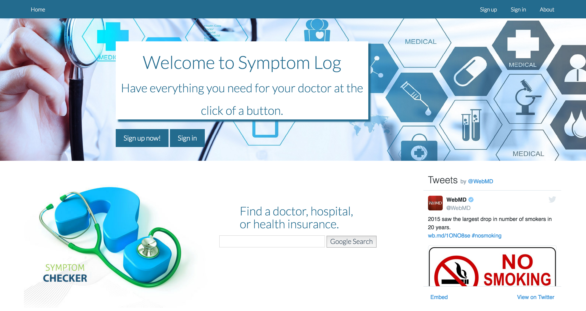

Projects

I chose the classic game Tic Tac Toe as my first app in Javascript/jQuery. The only library in use is jQuery to speed development time. Technologies used for this app were: HTML5, CSS3, Javascript/jQuery with DOM manipulation, Google Fonts, gliffy.com(wireframe), Trello, Sublime Text3.
Symptom Log helps users keep track of medical symptoms in one place accurately and securley. I chose to create Symptom Log a my first Ruby on Rails app. The app is password secure to keep all medical information private. I have complete RESTful routes and CRUD functionality. Technologies used for this app were: HTML5, CSS3, Ruby on Rails, PostgreSQL, Sublime Text 3, Trello, Heroku, Paperclip, S3, Amazon Web Services, Bootstrap/SASS, Bootswatch.

Style.Up is an app that helps users keep track of past and current hairstyles. Technologies used for this app were: MongoDB with Mongoose, ExpressJS, Node.js, Bootstrap, Heroku, Passport, Trello, Git and Github. APIs used: Amazon Web Services with S3 Cloud Storage, Mapbox GL/Direction/Geocoder, MLabs, Sengrid, Yelp.